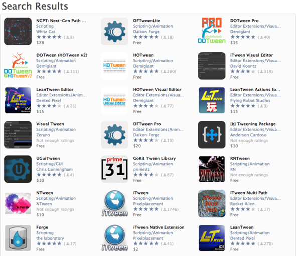
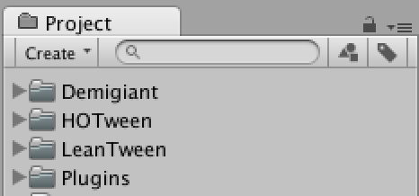
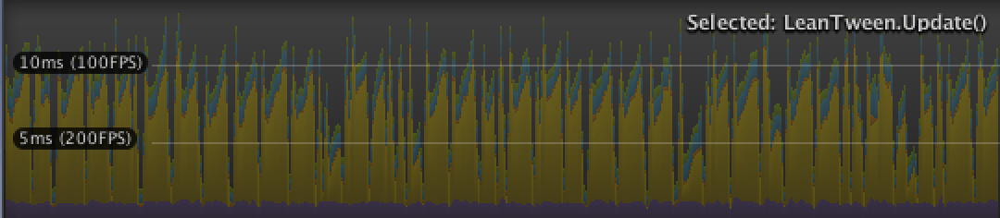
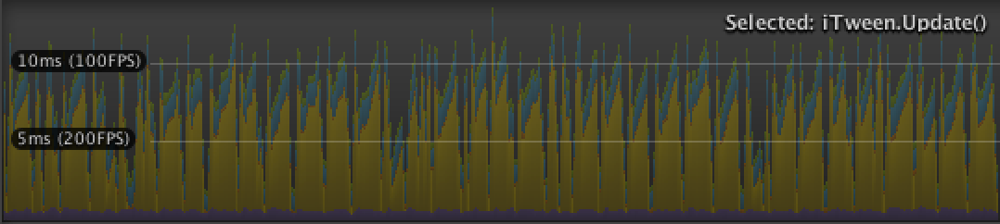
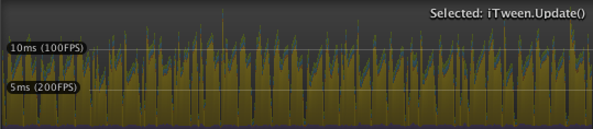
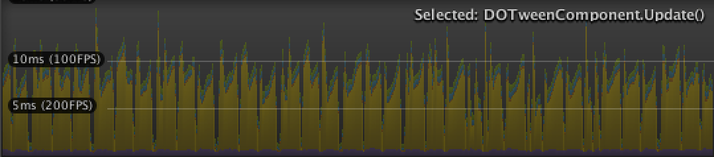

最近因為將自己的小專案從 NGUI 轉到 uGUI
轉換的過程中沒有遇到特別的問題
但是注意到在 NGUI 裡有個非常好用的 Tweener 類別
TweenPosition, TweenRotation, TweenColor, TweenAlpha…等
Tween 事實上就是一種數學庫
能夠讓使用者更加方便的處理數學動畫
這裡就不對 Tween 做詳細介紹
而在 uGUI 裡因為沒有內建的 Tween 類別可以使用
所以大致上分析了四種 Tween 的差別與方便性來作為往後選擇時的取捨
會以這四種 Tween 來做比較是因為這四種 Tween Plugin 都是免費的
當然還有許多 Tween Plugin 都是免費的但在這邊就不列入討論了
大家可以在 AssetStore 裡收尋 Tween 關鍵字就可以找到這四種 Tween Plugin

將四種 Tween Plugin 都下載並匯入到專案中

在這個比較範例中
我撰寫了簡單的測試腳本
這裡所做的測試是讓物體可以做循環移動
並且移動方式都設定為線性移動
using UnityEngine;
using System.Collections;
using Holoville.HOTween;//For HOTween
using DG.Tweening;//For DOTween
public class TweenPositionTest : MonoBehaviour
{
public enum TweenType
{
iTween,
HOTween,
DOTween,
LeanTween
}
public TweenType tweenType;
public Vector3 from;
public Vector3 to;
public float duration;
void Awake()
{
switch(tweenType)
{
case TweenType.iTween:
iTweenPosition();
break;
case TweenType.HOTween:
HOTweenPosition();
break;
case TweenType.DOTween:
DOTweenPosition();
break;
case TweenType.LeanTween:
LeanTweenPosition();
break;
}
}
private void iTweenPosition()
{
Hashtable hash = new Hashtable();
hash.Add("position", to);
hash.Add("isLocal", true);
hash.Add("loopType", iTween.LoopType.pingPong);
hash.Add("easetype", iTween.EaseType.linear);
iTween.MoveTo(gameObject, hash);
}
private void HOTweenPosition()
{
HOTween.Init();
TweenParms parms = new TweenParms().Prop("localPosition", to).Loops(-1,Holoville.HOTween.LoopType.Yoyo).Ease(EaseType.Linear);
HOTween.To(transform, duration, parms);
}
private void DOTweenPosition()
{
transform.DOLocalMove(to, duration).SetLoops(-1,DG.Tweening.LoopType.Yoyo).SetEase(DG.Tweening.Ease.Linear);
}
private void LeanTweenPosition()
{
LeanTween.moveLocal(gameObject, to, duration).setLoopPingPong().setEase(LeanTweenType.linear);
}
}
最大值為1.29ms最小值為0.51ms
2.HOTween

3.DOTween

4.LeanTween

以上的測試數據僅供參考，最大最小值為目測不一定準確
以效能來看的話
LeanTween ≈ DoTween > iTween > HOTween
再來回到上面分析一下代碼使用方便性
1.iTween
使用 Hashtable 來作為輸入依據
在使用上需要去注意對應參數的 Key 才能做有效輸入
2.HOTween
使用 TweenParms 來作為輸入依據
但在設定 LoopType 及 EaseType 等特定參數時使用函式設定
3.DoTween
使用函式設定，並且支援了擴充方法
4.LeanTween
使用函式設定，但不支援擴充方法
個人依照使用方便性的排列為
DOTween > LeanTween > iTween > HOTween
結論
性能：LeanTween ≈ DoTween > iTween > HOTween
使用性：DOTween > LeanTween > iTween > HOTween
普及率：iTween > LeanTween > HOTween > DOTween